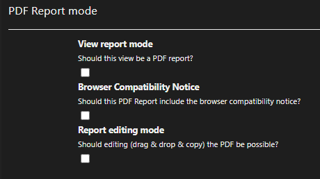

PDF Reporting in DataLinq¶
With PDF Reporting in DataLinq, reusable report templates can be created that are called with parameters and rendered as a PDF. Typical use cases include, among others:
Invoices
Letters
Info sheets
project-specific evaluations
Feature Overview¶
PDF templates can be filled with parameters when called. This allows content to be generated dynamically per record, user context, or process step.
Optionally, reports can also be supplemented via user input, for example via input fields for:
Name
Date
other domain-specific parameters
The generated PDF documents are available for download directly in the browser. The download can either:
be triggered from the view of the PDF template itself, or
be triggered from another view via a helper.
Creating PDF Templates¶
PDF templates are created, like other DataLinq views, in the DataLinq Code Editor. The following technologies can be combined:
HTML
CSS
JavaScript
Razor
special @PDF helpers for PDF reporting
This allows layout, data binding, and output format to be flexibly controlled, from simple standard documents to complex, dynamic reports.
Enabling PDF Reporting Mode¶
To create a PDF template, a new view is first created. Then, in the view’s settings under PDF Reporting mode, the desired mode can be enabled.

Three checkboxes are available in the PDF Reporting mode section:
View report mode
Enables PDF report mode for the current view. The view is then treated as a PDF report.
Browser Compatibility Notice
Shows users a notice when the view is called, stating that a current browser should be used for optimal rendering. The user must confirm the notice.
Report editing mode
Enables editing mode for reports. This allows administrators to position elements via drag and drop, in addition to the DataLinq markup code. Detailed information on this follows in a further chapter.
Creating a PDF Template¶
To create a report with one or more pages, the prebuilt @PDF helpers are used.
Additional support for using the helpers can be found in:
the DataLinq help
the DataLinq sandbox
A simple report with exactly one page and no further additional functions can be created as follows:
@PDF.BeginReport()
@PDF.NewPage()
<h1>Simple Report</h1>
@PDF.EndPage()
@PDF.EndReport()
In this example, a report is first started, and then a page with a heading is inserted.

Explanation of the @PDF Helper Functions¶
@PDF.BeginReport()¶
The helper @PDF.BeginReport() marks the beginning of a report.
The following parameters are available:
pageNumberOptions:Settings for automatic page numbering. This can be used to specify:
whether page numbers are used,
the position (left, center, right),
the display style (e.g.
1or1/X),how many pages should be skipped at the start (e.g. for a cover page).
Example:
pageNumberOptions: new Dictionary<string, object>() { {"UsePageNumbers", true}, {"Position", 1}, {"Type", 0}, {"SkipPages", 0} }
quality:Specifies the output quality for the download. Possible values are:
PdfQuality.Preview,PdfQuality.Low,PdfQuality.Medium,PdfQuality.High,PdfQuality.Best.
download_button:boolvalue that controls whether a download button is shown directly to the user in the template view.
fileName:File name of the downloaded PDF file. The default value is
dataLinqPdfReport.pdf.
Complete example:
@DLH.BeginPdfReport(pageNumberOptions: new Dictionary<string, object>(){ {"UsePageNumbers", true}, {"Position", 3}, {"Type", 0}, {"SkipPages", 0}}, download_button:true, fileName: $"Example_{@Guid.NewGuid().ToString()}", quality: PdfQuality.Medium )
@PDF.NewPage()¶
The helper @PDF.NewPage() is used to start a new page.
The following parameters are available:
pageTemplateOptions:Can be used if a page should access an existing template in addition to its own content. A typical use case is a central corporate-design template with a header and footer that is reused on all pages. This means the shared frame does not need to be redefined on every page.
Example:
pageTemplateOptions: new Dictionary<string, object>() { {"UsePageTemplate", true}, {"TemplateId", "datalinq-guide@pdf@pdf-template"} }
UsePageTemplate(bool): enables the use of a template.TemplateId: DataLinq ID of the template view to use.
Note
For templates (e.g. headers and footers), the contained elements should always be positioned absolutely. Otherwise, the template elements can shift as soon as additional content is inserted into the page.
Example:
<h1 style="position: absolute; top:150px; left:150px;"></h1>

landscape:truerotates the page to landscape orientation. The default isfalse(portrait).

paperSize:Sets the page size via the
PaperSizeenum. The default isA4.A1throughA6are possible. The paper sizes can be combined withlandscapeand used mixed within a report.

dynamicTableOptions:Used to automatically split content from tables and flat hierarchies across multiple pages when the space on the current page is not sufficient due to dynamic table content.
Example:
dynamicTableOptions: new Dictionary<string, object>() { {"Dynamic", true}, {"DynamicUseTemplate", true}, {"DefaultMarginTop", 220}, {"DefaultMarginBottom", 110}, {"RepeatHeader", true} }
Dynamic(bool): enables dynamic page splitting.DynamicUseTemplate(bool): specifies whether a template is also used for dynamically generated pages.DefaultMarginTop(int): default top margin for newly generated pages, e.g. for header areas from the template.This value only applies to additionally generated pages. If a minimum top margin is needed on the first page, this can be implemented with
<div style="height:XYZ px"></div>.
DefaultMarginBottom(int): minimum bottom margin, e.g. for footer areas; also applies to the first page.RepeatHeader(bool, defaulttrue): if set tofalse, the table header row is not repeated on subsequent pages for split tables.

Notes on Auto-Splitting¶
With auto-splitting, table content is automatically distributed across subsequent pages when the space on a page is not sufficient.
Important for the structure:
Tables that should be automatically split must not be nested inside other containers (for example, inside a
div).This rule also applies to tables that are included via
@DLH.IncludeView.When splitting, only the rows of a table are split.
All other HTML elements are treated as a flat hierarchy and are not broken down into sub-sections.
This means: elements such as div, h1, or p are always treated as a whole.
If such an element no longer fits completely on the current page, it is positioned as a whole block on the next page.
@PDF.EndPage()¶
The helper @PDF.EndPage() marks the end of a PDF report page.
Everything defined between @PDF.NewPage() and @PDF.EndPage() is rendered on this page.
The helper has no further parameters.
@PDF.EndReport()¶
The helper @PDF.EndReport() marks the end of the PDF report.
The helper has no further parameters.
@PDF.NewDraggable() / @PDF.EndDraggable()¶
The two helpers must always be used together:
@PDF.NewDraggable(...)opens the draggable area.@PDF.EndDraggable()closes the draggable area.
The content between these two helpers is treated as a single connected element and can be moved via drag and drop, if PDF Editing Mode is enabled in the view settings.
Parameters of @PDF.NewDraggable(...):
x: X position of the element.y: Y position of the element.
Notes on usage:
Right-clicking the draggable element copies the current
xandyvalues to the clipboard.- Use is only recommended on fixed pages, i.e. without auto-splitting.
On dynamically split pages, the positioning may otherwise behave unpredictably.
On a PDF page,
Ctrl+Mcan be used to show/hide a grid with center lines.If
Ctrlis held down while moving an element, it can snap to the center lines.If the center lines are disabled (
Ctrl+M), elements can instead snap to other elements (snapping).